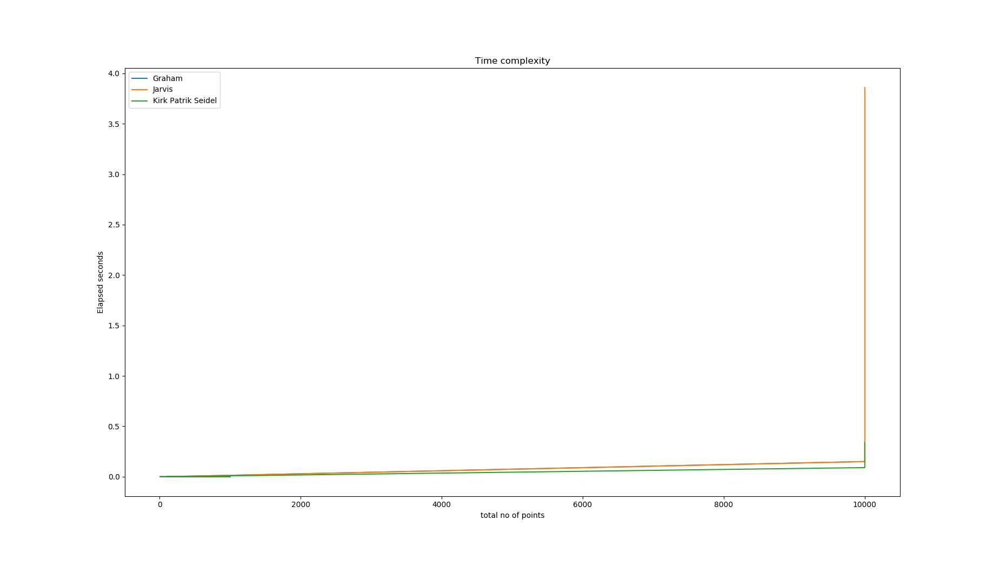
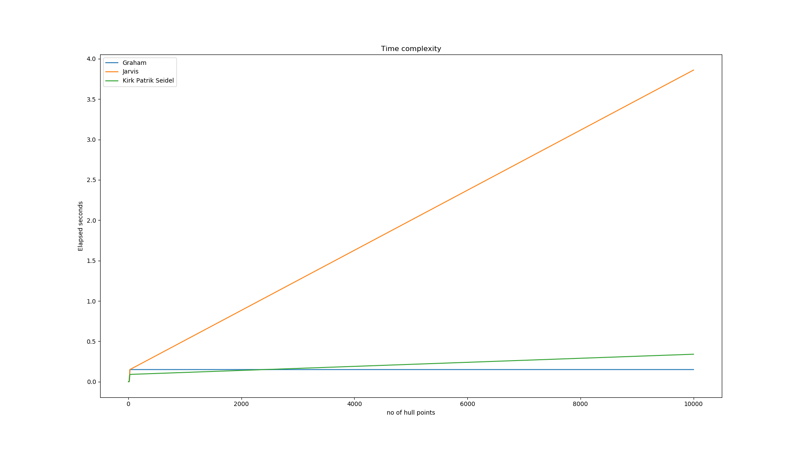

We know that the running times of the algorithms are as follows:
Jarvis March - O(nh);
Graham's Scan - O(nlog(n));
Kirckpatrick Siedel - O(nlog(h));
Accordingly, we find that for inputs where there are many points on the hull, Jarvis March is significantly slower than the other two algorithms.
We do not find any major difference other than Jarvis March slowing down significantly when the number if hull points is large.


Team Members
Name: Skanda Vaidyanath
ID:2016AAPS0236H
Name: Vamsi Aribandi
ID:2016A7PS0803H
Name: Deeksha Kartik
ID:2016PSA70809H